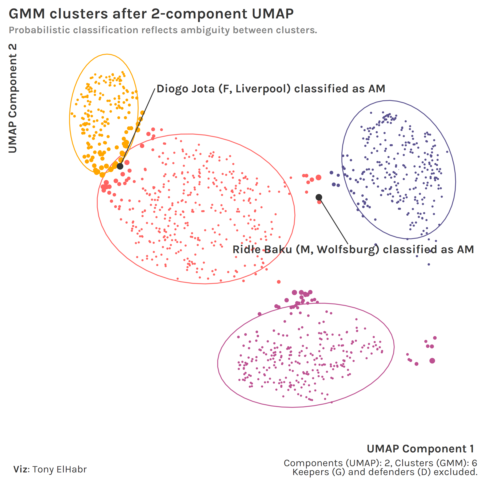
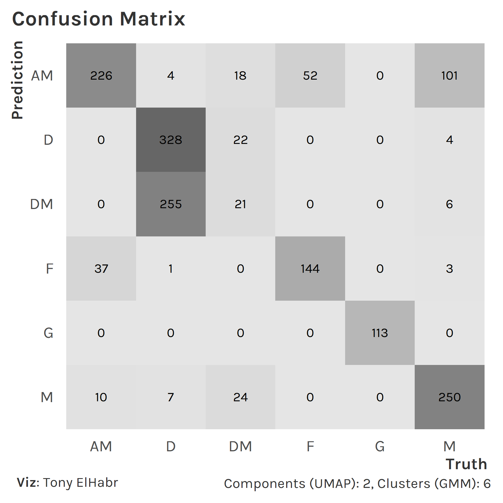

Introduction
Combining principal component analysis (PCA) and kmeans clustering seems to be a pretty popular 1-2 punch in data science. While there is some debate about whether combining dimensionality reduction and clustering is something we should ever do1, I’m not here to debate that. I’m here to illustrate the potential advantages of upgrading your PCA + kmeans workflow to Uniform Manifold Approximation and Projection (UMAP) + Gaussian Mixture Model (GMM), as noted in my reply here.

For this demonstration, I’ll be using this data set pointed out here, including over 100 stats for players from soccer’s “Big 5” leagues.
library(tidyverse)
df <-
'FBRef 2020-21 T5 League Data.xlsx' %>%
readxl::read_excel() %>%
janitor::clean_names() %>%
mutate(across(where(is.double), ~replace_na(.x, 0)))
# Let's only use players with a 10 matches' worth of minutes.
df_filt <- df %>% filter(min > (10 * 90))
df_filt %>% dim()
## [1] 1626 128
Trying to infer something from the correlation matrix doesn’t get you very far, so one can see why dimensionality reduction will be useful.

Also, we don’t really have “labels” here (more on this later), so clustering can be useful for learning something from our data.
Unsupervised Evaluation
We’ll be feeding in the results from the dimensionality reduction—either PCA or UMAP—to a clustering method—either kmeans or GMM. So, since clustering comes last, all we need to do is figure out how to judge the clustering; this will tell us something about how “good” the combination of dimensionality reduction and clustering is overall.
I’ll save you from google-ing and just tell you that within-cluster sum of squares (WSS) is typically used for kmeans, and Bayesian Information Criteria (BIC) is the go-to metric for GMM. WSS and BIC are not on the same scale, so we can’t directly compare kmeans and GMM at this point. Nonetheless, we can experiment with different numbers of components—the one major “hyperparameter” for dimensionality reduction—prior to the clustering to identify if more or less components is “better”, given the clustering method. Oh, and why not also vary the number of clusters—the one notable hyperparameter for clustering—while we’re at it?

For kmeans, we see that WSS decreases with increasing number of clusters, which is typically what we see in [“elbow” plots](https://en.wikipedia.org/wiki/Elbow_method_(clustering) like this. Additionally, we see that WSS decreases with increasing number of components. This makes sense—additional components means more data is accounted for.2 There is definitely a point of “diminishing returns”, somewhere around 3 clusters, after which WSS barely improves.3 Overall, we observe that the kmeans models using UMAP pre-processing do better, compared to those using PCA.
Moving on to GMM, we observe that BIC generally increases with the number of clusters as well. (Note that, due to the way the {mclust} package defines it’s objective function, higher BIC is “better”.)
Regarding number of components, we see that the GMM models using more UMAP components do better, as we should have expected. On the other hand, we observe that GMM models using less PCA components do better than those with more components! This is a bit of an odd finding that I don’t have a great explanation for. (Someone please math-splain to me.) Nonetheless, we see that UMAP does better than PCA overall, as we observed with kmeans.
For those interested in the code, I map-ed a function across a grid of parameters to generate the data for these plots.4
do_dimr_clust <-
function(n, k,
f_dimr = c('pca', 'umap'),
f_clust = c('kmeans', 'gmm'),
...) {
f_dimr <- match.arg(f_dimr)
f_clust <- match.arg(f_clust)
f_step <- ifelse(f_dimr == 'pca', recipes::step_pca, embed::step_umap)
f_fit <- ifelse(f_clust == 'gmm', stats::kmeans, mclust::Mclust)
data <-
recipes::recipe(formula( ~ .), data = df_filt) %>%
recipes::step_normalize(recipes::all_numeric_predictors()) %>%
f_step(recipes::all_numeric_predictors(), num_comp = n) %>%
recipes::prep() %>%
recipes::juice() %>%
select(where(is.numeric))
fit <- f_fit(data, ...)
broom::glance(fit)
}
metrics <-
crossing(
n = seq.int(2, 8),
k = seq.int(2, 8),
f_dimr = c('pca', 'umap'),
f_clust = c('kmeans', 'mclust')
) %>%
mutate(metrics = pmap(
list(n, k, f, g),
~ do_dimr_clust(
n = ..1,
k = ..2,
f = ..3,
g = ..4
)
))
metrics
## # A tibble: 196 x 5
## n k f g metrics
## <int> <int> <chr> <chr> <list>
## 1 2 2 pca kmeans <tibble [1 x 4]>
## 2 2 2 pca gmm <tibble [1 x 7]>
## 3 2 2 umap kmeans <tibble [1 x 4]>
## 4 2 2 umap gmm <tibble [1 x 7]>
## 5 2 3 pca kmeans <tibble [1 x 4]>
## 6 2 3 pca gmm <tibble [1 x 7]>
## 7 2 3 umap kmeans <tibble [1 x 4]>
## 8 2 3 umap gmm <tibble [1 x 7]>
## 9 2 4 pca kmeans <tibble [1 x 4]>
## 10 2 4 pca gmm <tibble [1 x 7]>
## # ... with 186 more rows
“Supervised” Evaluation
We actually do have something that we can use to help us identify clusters—player position (pos). Let’s treat these position groups as pseudo-labels with which we can gauge the effectiveness of the clustering.
df_filt <-
df_filt %>%
mutate(
across(
pos,
~case_when(
.x %in% c('DF,MF', 'MF,DF') ~ 'DM',
.x %in% c('DF,FW', 'FW,DF') ~ 'M',
.x %in% c('MF,FW', 'FW,MF') ~ 'AM',
.x == 'DF' ~ 'D',
.x == 'MF' ~ 'M',
.x == 'FW' ~ 'F',
.x == 'GK' ~ 'G',
.x == 'GK,MF' ~ 'G',
TRUE ~ .x
)
)
)
df_filt %>% count(pos, sort = TRUE)
## # A tibble: 6 x 2
## pos n
## <chr> <int>
## 1 D 595
## 2 M 364
## 3 AM 273
## 4 F 196
## 5 G 113
## 6 DM 85
Typically we don’t have labels for clustering tasks; if we do, we’re usually doing some kind of supervised multi-label classification. But our labels aren’t “true” labels in this case, both because:
- a player’s nominal position often doesn’t completely describe their style of play, and
- the grouping I did to reduce the number of positions from 11 to 6 was perhaps not optimal.
So now let’s do the same as before—evaluate different combinations of PCA and UMAP with kmeans and GMM. But now we can use some supervised evaluation metrics: (1) accuracy and (2) mean log loss. While the former is based on the “hard” predictions, the latter is based on probabilities for each class. kmeans returns just hard cluster assignments, so computing accuracy is straightforward; since it doesn’t return probabilities, we’ll treat the hard assignments as having a probability of 1 to compute log loss.5
We can compare the two clustering methods more directly now using these two metrics. Since we know that there are 6 position groups, we’ll keep the number of clusters constant at 6. (Note that number of clusters was shown on the x-axis before; but since we have fixed number of components at 6, now we show the number of components on the x-axis.)
Looking at accuracy first, we see that the best combo depends on our choice for number of components. Overall, we might say that the UMAP combos are better.

Next, looking at average log loss, we see that the GMM clustering methods seem to do better overall (although this may be due to the fact that log loss is not typically used for supervised kmeans). The PCA + GMM does the best across all number of components, with the exception of 7. Note that we get a mean log loss around 28 when we predict the majority class (defender) with a probability of 1 for all observations. (This is a good “baseline” to contextualize our numbers.)

UMAP shines relative to PCA according to accuracy, and GMM beats out kmeans in terms of log loss. Despite these conclusions, we still don’t have clear evidence that UMAP + GMM is the best 1-2 combo; nonetheless, we can at least feel good about its general strength.
Aside: Re-coding Clusters
I won’t bother to show all the code to generate the above plots since it’s mostly just broom::augmment() and {ggplot2}. But, if you have ever worked with supervised stuff like this (if we can call it that), you’ll know that figuring out which of your clusters correspond to your known groups can be difficult. In this case, I started from a variable holding the predicted .class and the true class (pos).
assignments
## # A tibble: 1,626 x 2
## .class pos
## <int> <chr>
## 1 1 D
## 2 2 D
## 3 3 M
## 4 3 M
## 5 4 AM
## 6 2 D
## 7 2 D
## 8 4 F
## 9 2 D
## 10 1 D
## # ... with 1,616 more rows
I generated a correlation matrix for these two columns, ready to pass into a matching procedure.
cors <-
assignments %>%
fastDummies::dummy_cols(c('.class', 'pos'), remove_selected_columns = TRUE) %>%
corrr::correlate(method = 'spearman', quiet = TRUE) %>%
filter(term %>% str_detect('pos')) %>%
select(term, matches('^[.]class'))
cors
## # A tibble: 6 x 7
## term .class_1 .class_2 .class_3 .class_4 .class_5 .class_6
## <chr> <dbl> <dbl> <dbl> <dbl> <dbl> <dbl>
## 1 pos_AM -0.208 -0.241 -0.178 0.0251 0.625 -0.123
## 2 pos_D 0.499 0.615 -0.335 -0.264 -0.428 -0.208
## 3 pos_DM 0.0797 0.0330 0.0548 -0.0829 -0.0519 -0.0642
## 4 pos_F -0.171 -0.199 -0.168 0.724 0.0232 -0.101
## 5 pos_G -0.127 -0.147 -0.124 -0.0964 -0.157 1
## 6 pos_M -0.222 -0.267 0.724 -0.180 0.0395 -0.147
Then I used clue::solve_LSAP() to do the bipartite matching magic. The rest is just pre- and post-processing.
k <- 6 # number of clusters
cols_idx <- 2:(k+1)
cors_mat <- as.matrix(cors[,cols_idx]) + 1 # all values have to be positive
rownames(cors_mat) <- cors$term
cols <- names(cors)[cols_idx]
colnames(cors_mat) <- cols
cols_idx_min <- clue::solve_LSAP(cors_mat, maximum = TRUE)
cols_min <- cols[cols_idx_min]
pairs <-
tibble::tibble(
.class = cols_min %>% str_remove('^[.]class_') %>% as.integer(),
pos = cors$term %>% str_remove('pos_')
)
pairs
## # A tibble: 6 x 2
## .class pos
## <int> <chr>
## 1 5 AM
## 2 2 D
## 3 1 DM
## 4 4 F
## 5 6 G
## 6 3 M
This pairs variable can be used to re-code the .class column in our assignments from before.
Case Study: PCA vs. UMAP
Let’s step back from the clustering techniques and focus on dimensionality reduction for a moment. One of the ways that dimensionality reduction can be leveraged in sports like soccer is for player similarity metrics.6 Let’s take a look at how this can be done, comparing the PCA and UMAP results while we’re at it.
Direct comparison of the similarity “scores” we’ll compute—based on Euclidean distance between a chosen player’s components and other players’ components—is not wise given the different ranges of our PCA and UMAP components, so we’ll rely on rankings based on these scores.7 Additionally, fbref provides a “baseline” that we can use to judge our similarity rankings.8
We’ll start with Jadon Sancho, a highly discussed player at the moment (as a potential transfer).

We first need to set up our data into the following format. (This is for 2-component, 6-cluster UMAP + GMM.)
sims_int
## # A tibble: 1,664 x 6
## player_1 player_2 comp_1 comp_2 value_1 value_2
## <chr> <chr> <int> <int> <dbl> <dbl>
## 1 Jadon Sancho Aaron Leya Iseka 1 1 -4.18 -5.14
## 2 Jadon Sancho Aaron Leya Iseka 2 2 -0.678 2.49
## 3 Jadon Sancho Aaron Ramsey 1 1 -4.18 -3.25
## 4 Jadon Sancho Aaron Ramsey 2 2 -0.678 -0.738
## 5 Jadon Sancho Abdoul Kader Bamba 1 1 -4.18 -3.40
## 6 Jadon Sancho Abdoul Kader Bamba 2 2 -0.678 0.0929
## 7 Jadon Sancho Abdoulaye Doucouré 1 1 -4.18 -1.36
## 8 Jadon Sancho Abdoulaye Doucouré 2 2 -0.678 -2.66
## 9 Jadon Sancho Abdoulaye Touré 1 1 -4.18 -1.36
## 10 Jadon Sancho Abdoulaye Touré 2 2 -0.678 -2.89
## # ... with 1,654 more rows
Then the Euclidean distance calculation is fairly straightforward.
## # A tibble: 830 x 4
## player d score rnk
## <chr> <dbl> <dbl> <int>
## 1 Alexis Sánchez 0.0581 0.994 1
## 2 Riyad Mahrez 0.120 0.988 2
## 3 Serge Gnabry 0.132 0.986 3
## 4 Jack Grealish 0.137 0.986 4
## 5 Pablo Sarabia 0.171 0.983 5
## 6 Thomas Müller 0.214 0.978 6
## 7 Leroy Sané 0.223 0.977 7
## 8 Callum Hudson-Odoi 0.226 0.977 8
## 9 Jesse Lingard 0.260 0.973 9
## 10 Ousmane Dembélé 0.263 0.973 10
## # ... with 820 more rows
Doing the same for PCA and combining all results, we get the following set of rankings.

We see that the UMAP rankings are “closer” overall to the fbref rankings. Of course, there are some caveats:
- This is just one player.
- This is with a specific number of components and clusters.
- We are comparing to similarity rankings based on a separate methodology.
Our observation here (that UMAP > PCA) shouldn’t be taken out of context to conclude that UMAP > PCA in all contexts. Nonetheless, I think this is an interesting use case for dimensionality reduction, where one can justify PCA, UMAP, or any other similar technique, depending on how intuitive the results are.
Case Study: UMAP + GMM
Finally, let’s bring clustering back into the conversation. We’re going to focus on how the heralded UMAP + GMM combo can be visualized to provide insight that supports (or debunks) our prior understanding.
With a 2-component UMAP + 6-cluster GMM, we can see how the 6 position groups can be identified in a 2-D space.

For those curious, using PCA instead of UMAP also leads to an identifiable set of clusters. However, uncertainties are generally higher across the board (larger point sizes, more overlap between covariance ellipsoids).

If we exclude keepers (G) and defenders (D) to focus on the other 4 positions with our UMAP + GMM approach, we can better see how some individual points —at the edges or outside of covariance ellipsoids—are classified with a higher degree of uncertainty.9

Now, highlighting incorrect classifications, we can see how the defensive midfielder (DM) position group (upper left) seems to be a blind spot in our approach.

A more traditional confusion matrix10 also illustrates the inaccuracy with classifying DMs. (Note the lack of dark grey fill in the DM column.)

DMs are often classified as defenders instead. I think this poor result has is more so due to my lazy grouping of players with "MF,DF' or "DF,MF" positions in the original data set than a fault in our approach.
Conclusion
So, should our overall conclusion be that we should never use PCA or kmeans? No, not necessarily. They can both be much faster to computer than UMAP and GMMs respectively, which can be a huge positive if computation is a concern. PCA is linear while UMAP is not, so you may want to choose PCA to make it easier to explain to your friends. Regarding clustering, kmeans is technically a specific form of a GMM, so if you want to sound cool to your friends and tell them that you use GMMs, you can do that!
Anyways, I hope I’ve shown why you should try out UMAP and GMM the next time you think about using PCA and kmeans.
In some contexts you may want to do feature selection and/or manual grouping of data.↩︎
While this whole thing is more about comparing techniques, I should make a note about WSS. We don’t want to increase the number of components for the sake of minimizing WSS. We lose some degree of interpretation with increasing components. Additionally, we could be overfitting the model by increasing the number of components. Although we don’t have the intention of classifying new observations in this demo, it’s still good to keep overfitting in mind.↩︎
This demo isn’t really intended to be a study in how to choose the best number of clusters, but I figured I’d point this out.↩︎
I’d suggest this blog post from Julia Silge for a better explanation of clustering with R and
{tidymodels}.↩︎Perhaps this is against best practice, but we’ll do it here for the sake of comparison.↩︎
Normalization perhaps doesn’t help much here given the clustered nature of the reduced data.↩︎
Normalization perhaps doesn’t help much here given the clustered nature of the reduced data.↩︎
fbref uses a different methodology, so perhaps it’s unwise to compare to them.↩︎
Sure, one can argue that a player like Diogo Jota should have been classified as an attacking midfielder (AM) to begin with, in which case he might not have been misclassified here.↩︎
By the way, the
autoplot()function foryardstick::conf_mat()results is awesome if you haven’t ever used it.↩︎